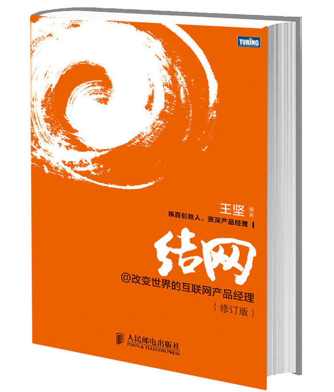

注：【】部分为笔者心得，非原文摘抄。
- 互联网产品经理按照工作内容的时间跨度可以划分为战略性工作、阶段性工作和日常性工作三大块：
- 战略性工作跨越产品的整个生命周期，主要包括：
- 为产品建立长期的战略布局；
- 发现新的产品机会；
- 为产品的演变、增强和引进提供建议；
- 阶段性工作有明确的起始时间，主要包括：
- 参与新产品的开发；
- 参与年度商业计划的制定；
- 利用公司内部、外部资源开展营销活动；
- 预测竞争对手的行动并制定应对方案；
- 更新产品并进行相应的用户教育；
- 降低成本；
- 重新规划产品线；
- 日常性工作是按日执行的，主要包括：
- 收集分析竞争情报；
- 竞争情报主要包括竞争对手动向、行业趋势与机会、产品运营数据和用户反馈信息等；
- 协调开发、运营、客服、销售等资源以保证产品正常运作；
- 执行商业计划。
- 收集分析竞争情报；
- 战略性工作跨越产品的整个生命周期，主要包括：
- 产品经理需要在工作中展示自己在战略规划、产品策划、竞争情报、协调润滑等方面的专业性，与团队伙伴建立信任关系，同时也需要了解团队伙伴们的工作能力，在相互了解的基础上划定彼此工作的分界线。
- 缺少项目经理和营销团队时，产品经理就是第一替补。
- 互联网产品通常会随着用户规模增大而出现单用户成本降低和单用户利润率上升的网络效应，很容易出现赢家通吃的局面。
- 创造用户价值是第一要务。
- 观察能力和推理能力对产品经理而言至关重要。
- 没有观察到细节的观察是不能称之为观察的。
- 成功的模仿者们，他们所做的并不仅仅是模仿，他们的确使用了和前任相同的概念，但他们坚持不断创新，使自己的产品远远超出了创新者的原始概念或功能集，并且持续保持市场地位的领先。
- 模仿是一种逆向工程，需要对产品目标进行分析研究，揣测它到底满足了用户的哪些需求和信息处理流程。
- 预测未来的最好方法就是创造未来。——阿伦·凯
- 蓝海战略成功与否，取决于一款产品能不能在它的蓝海时段内达到理想的用户规模或筑起足够高的壁垒。
- 控制蓝海时段的开启时间是非常重要的。
- 在判断产品概念是否真的面向用户时，测试用的用户样本越具体越好。
- 在为概念寻找真实用户的同时，也需要了解这类用户的规模，以便预测自己的产品在整个市场中的地位。
- 如果一句话讲不清楚一个概念所能带来的好处，那么这个概念就有大问题。能够像多大范围的人群快速讲明白产品的好处，能够打动着中间的多少人，这两个方面在很大程度上决定了产品的用户规模。
- 真实世界透射法是指将互联网上的概念投射到真实世界中比较普遍的事务上，通过已经被验证的真实世界案例或规则来推断这个互联网产品概念的可行性。
- 通过观察周围来获取信息的方法叫周觉（Ambient awareness）。
- 没有充足的渠道，产品就会错失很多发展机会，甚至直接被市场淘汰。
- 对于产品来说，应该习惯与不同用户会用不同的视角来看待自己的商业模式这个事实。
- 从广告形式来看，互联网广告可以分为搜索广告、展示类广告、分类广告、引导广告、电子邮件广告五大类。
- 要避免用做 Facebook 的心态去做 Wikipedia，否则这种定位上的错位对产品和产品经理而言都是灾难。
- 现金牛产品是指利润率超高的产品，并且利润占公司总利润的很大比例。
- 所谓平台产品，就是能通过自身的资源优势拉动其它产品的产品。
- 导入用户数＝平台产品的活跃用户数 × 转化率 × 拉动时长
- 衡量产品是否具备平台性质时，它的用户数是第一个关键指标。
- 一款产品的用户规模是否会变得很大，要看这款产品有没有满足用户的强需求和频发需求。
- 平台要对用户产生影响，让他们去拉动被拉动的产品，给予被拉动产品一定的展示面积和展示时间是非常重要的。
- 如果平台提供了账号体系，用户到达被拉动产品之后可以直接登录，那就会大幅提升转化率，很多用户都是在注册这个环节流失的。
- 如果想要跳出单款产品的生命周期，那就应当首选平台产品和现金牛产品。
- 对于初创新产品来说，人力资源，特别是一个靠谱的创始人，永远是最重要的资源。
- 如果你不能确信自己的答案是最佳答案，你就不是最适合的人选。
- 人少生存压力就小很多。
- 随着人数增加，沟通成本会大幅增加，人均效率会出现下降，人海战术在很多时候并不是真正解决问题的方法。
- 每个决策都会涉及一系列的成本，能够预先看清这些成本是做出正确决策的先决条件。
- 投资者或潜在伙伴关注的三大问题：
- 产品概念是否处于趋势上，是否在满足强需求和频发需求？
- 是否找到了有效的突破口，突破之后如何建立壁垒？
- 团队能力与产品概念是否匹配？
- 【抄袭是创造力的腐蚀剂。】
- 如果公司产品线很长，那么增加新的产品就会越来越困难，因为已经没有多少空白可以去填补了。这个时候，清晰地了解公司的业务布局就显得非常重要，如果要建立独立的产品，它一定要处于业务布局中的空白地带，而不是某个现有产品增加一项新功能就可以替代的。
- 竖起鲜明的定位，把握住一定规模的用户，才有可能谈深度和广度。
- 突破口的作用是让用户觉得产品有用，壁垒的作用是让这种有用变得难以复制。
- 灰度发布是指在不中断服务的情况下向部分用户发布新功能。
- 使用焦点小组（Focus group）的方法可以对用户进行概念测试，从而在产品设计阶段达到验证团队想法的目的。焦点小组就是一种邀请大约 6-9 个具有代表性的用户对某一主题或观念进行深入讨论的方法。6-9 个用户所呈现的一些结果是具有普遍性的，并非个人看法。
- 群体动力学指出，只要有别人在场，一个人的思想行为就同他单独一个人时有所不同，会受到其他人的影响。
- 用户的历史行为比他们当前的意愿更有价值。历史行为，特别是消费行为，是真实发生过的，更能代表用户的真实意愿。
- 可用性测试包含 3 个主要步骤：
- 寻找一些有代表性的、符合产品潜在用户条件的用户；
- 请这些具有代表性的用户在产品或产品原型上完成一些任务；
- 使用体验观察室观察他们的操作，他们在哪里成功了，在哪里卡住了，不要发言，倾听他们的意见。
- 在网站作出重要决策的时候，有时是需要依赖于数据的，不能凭想当然。
- 产品经理可以有自己的主张，可以非常坚持，但是不可以只活在自己的世界里而不在乎用户的声音和身边的建议。
- 网页描述表只包含一个网页中所需要展示的元素及其背后的逻辑，并不包含这些元素在页面中的布局和样式。
- 产品设计文档是伴随产品整个生命周期的连接概念与执行的重要工具，它帮助产品团队与研发团队和高层领导达成共识，进而明确研发计划并指导研发过程。
- PPT 和 Keynote 才是应对领导最有效的文档。
- 保持需求的简短，把需求之外的东西放到附录、图标或 FAQ 中。
- 在撰写需求文档的时候，产品团队应对产品逻辑进行充分的讨论和测试，可能的话，最好邀请一些专家和用户参与测试。
- 选取适当的方式展现特定的信息，是产品经理的一项重要技能，要做到使信息能够快速有效地被受众理解。
- 产品设计文档是最终提交给研发团队的文档，含糊不清的东西应该已经全部被消灭了，最终提交的内容都是确切的、可以被执行的。
- 千万不要过于关注文档而忽视了沟通。
- 用户是否喜欢我们的产品，取决于他使用产品所获得的好处，也取决于他在产品中获得的体验，这两方面都是用户价值所在，缺一不可。
- 用户体验影响产品口碑，口碑影响产品成败，产品成败影响产品经理的利益。
- 用户体验三要素：别让我等！别让我想！别让我烦！
- 如果完整性的牺牲处于可容忍范围之内，用完整性来换取速度、响应和服务器开销则是最好的选择。
- 危机管理的基本对策是：加强信息的披露和与用户的沟通，争取用户的谅解与支持。
- 包装的 3 要素：
- Logo；
- 是什么；
- 带来什么好处。
- 递进显示在显示面积非常有限的时候变得更加重要。
- 缩短完成路径就是帮用户偷懒。
- 在关注缩短完成路径这个问题的时候，优化操作步骤是第一位的。
- 考虑成本的时候，研发相关成本只占 20%，更多的成本和影响产品成败的因素在研发过程之外。
- 项目经理在管理项目的时候需要关注：
- 对结果进行预期；
- 让所有人上船；
- 把事情做完。
- 在变更的时候，不要忘记更新网站结构图、线框图和网页描述表这三份产品设计文档。
- 产品设计文档对于产品经理来说，就像代码对于研发人员来说一样重要。
- 墨菲定律项目版：
- 一项工作如果只有一个人负责，这个人肯定会休假或者离职；
- 认为没有技术难点的地方，都会成为技术难点或性能瓶颈。
- 检查环节有两类重要工作：一是确认执行结果与计划是否相符；二是确认执行结果是否让用户真正满意。
- 深度地、频繁地使用自己的产品是一名产品经理应该养成的职业习惯之一，产品经理需要做到“春江水暖鸭先知”。
- CE（Customer Engagement）的主要方法有：
- 提供一个明显的反馈入口，将用户引导到反馈论坛发表他们的投诉和建议，并进行及时的回复和处理；
- 订阅产品关键字的搜索结果，了解官方反馈论坛之外的反馈，同时给予反馈和处理；
- 建立或加入核心用户群，第一时间获取他们的想法，也可以很方便地测试一些产品概念；
- 通过用户行为录像工具或跟用户回家的方法，追踪单个用户的使用行为，发现他的使用障碍在哪里，解决这些问题；
- 对流失用户进行回访，分析流失原因，改进产品降低用户的流失率。
- 做好 CE 的关键是爱与责任感。
- 不要忘记自己是产品的利益相关者。
- 日流量＝日访问用户数 × 平均浏览网页数
- 如果用户使用 A 产品的体验叠加上使用 B 产品的体验，相对于使用 A 产品加 B 产品的竞品可以获得增值或低成本，那么我们可以说 A 产品和 B 产品的组合形成了封闭体验。
- 从用户对拉动手段的认知情况来看，可以把拉动手段大致分为三类：广告、植入和融合。
- 植入和广告的区别在于，植入是“偷偷地”影响用户，广告是明目张胆地影响用户。
- 互联网上的植入有三种主要方式：
- 把产品的入口放到平台上；
- 把产品的品牌或展示放到某个内容中；
- 将产品的品牌或入口放到用户“身”上，他们在平台中活动的同时就传播了产品。
- 融合带来的转化率最高，拉动时长最长，但是它对用户重叠度和封闭体验的要求也最高，通常来说平台还的是自家的才行。
- 口碑是最强的拉动手段。
- 如果我们能把产品的硬指标和差异化做到位，说明白，让每个人都能知道我们的产品好在哪里，并且他们用了也确实觉得好用，口碑就会大面积出现。
- 用户对产品的忠诚度与产品的更新频率有关。
- 管理用户的期望至关重要。
- 在兼听的同时，产品经理一定要清楚自己的底线在哪里。
- 对热点事件进行应激反应，一方面可以满足现有用户关注热点事件的需求，另一方面也可以借助流行趋势来吸纳更多的用户。
- 对产品运行环境进行分析，让产品在不健全的环境中通过有损运行的方式来保持部分核心体验的方法，就是优雅降级（Graceful degradation）。
- 竞争情报（CI，Competitive intelligence）是研究任何能提升公司竞争力的因素的过程，其目标是促进公司内部的变革。
- 竞争情报需要研究以下因素：
- 竞争对手信息；
- 用户信息；
- 市场信息；
- 技术信息；
- 产品信息；
- 环境信息；
- 竞争情报需要注意的基本原则：
- 全景＞精确；
- 一手信息＞二手信息；
- 多节点＞单节点；
- 人脑＞电脑；
- 产品需求＞个人爱好；
- 促进变革＞精美的报告。
- 当团队成员不愿意接受新的工作任务来进行产品改进的时候，兴奋度一定是出了问题。
- 保持团队的兴奋度有两个法宝：第一个是正反馈；第二个是信念。
- 光有兴奋度而不能正视自己是非常可怕的。
- 不要把信念建立在赚钱上，因为这样的信念很容易被逆境摧毁，从而导致事业的失败。
- 逆境并不可怕，可怕的是不了解产品的处境和主动放弃。
- 老板对产品经理的信任程度决定授权程度。
- 一定的私交基础，对沟通是非常有帮助的。
- 沟通的两个层面：一是维系并促进人际关系；二是达到沟通的目的。
- 在沟通中要注意平等原则、相容原则、互利原则和信用原则。
- 在沟通钱，需要确认好沟通目标、沟通对象、要传递的信息、信息的展现方式和最终要达成的协议等。
- 创新的难点在于搞出来的东西要靠谱。
- 找到一群有创意，能够发现创意，能够紧密合作共同实现创意的同事在一起工作，是非常非常重要的事情。——Ed Catmull
- 处理众多问题最有效的方式，是信任大家直接彼此合作解决困难，而不用忙于核对各种权限。——Ed Catmull
- 抵制诱惑最好的办法就是加强过滤，过滤得越充分，就越容易冷却对一些概念的热情。
- 自省就是要系统地发现自满及其它隐蔽的问题，并及时解决。
- 真正想做一件事情的人，会找到一个方法；不想做的人，会找到一百个借口。——谚语
- 【“没时间”通常是没兴趣的托辞。】
- 刻意练习包括以下 3 方面的要素：
- 关注技能的改进，而不是结果；
- 通过反复练习达到明确的目标；
- 获得及时有效的反馈，并善用它们。